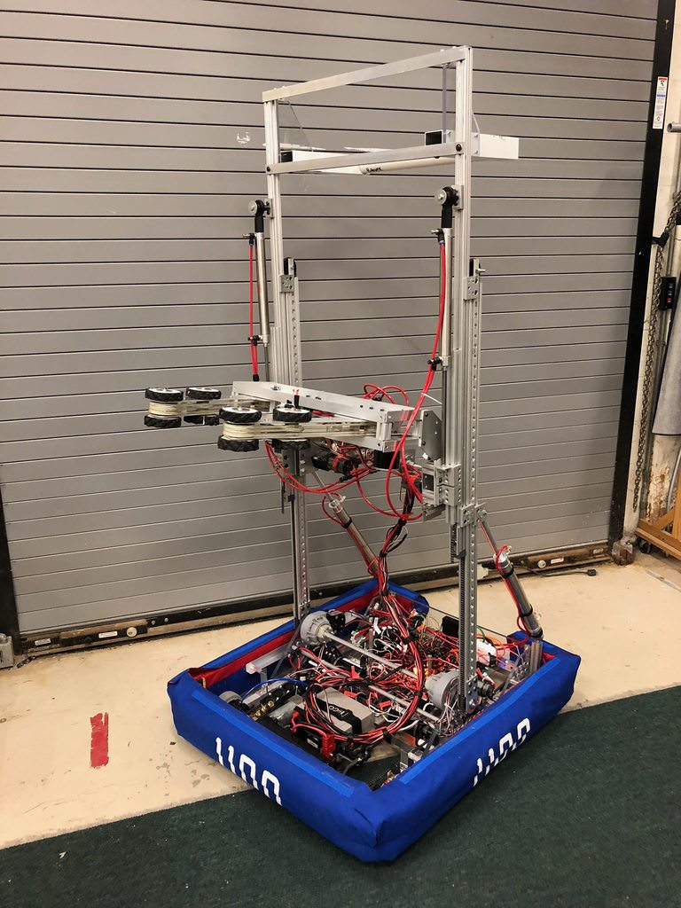
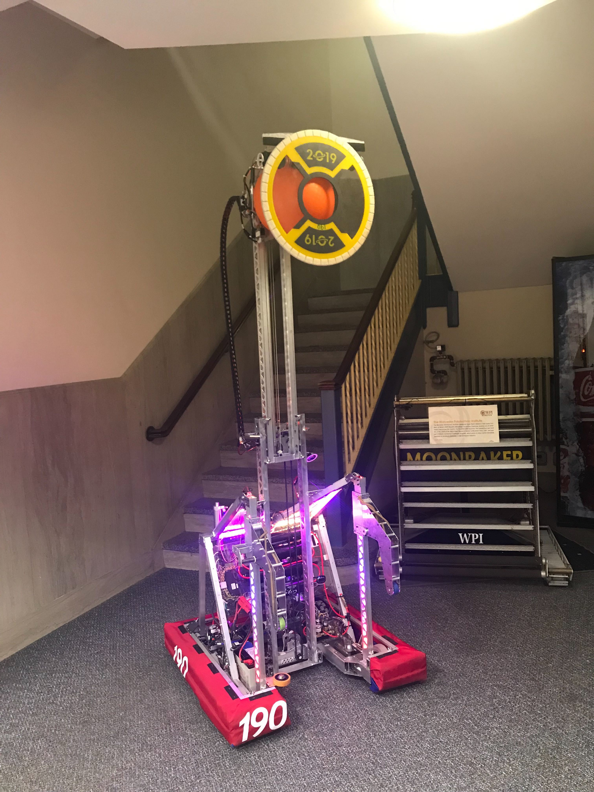

My favorite extracurricular is FIRST Robotics. At my sending school,
Algonquin Regional High School, I was the lead programmer during the
2018 season. Here is 1100's Blue Alliance
page.
On team 190, Mass Academy's robotics team, I am
Chief of Controls and driver. This means that I am in charge of all
things electrical and software. While this job was previously held by
a WPI senior, my previous experience on team 1100 qualified me for
this position. This year, I automated almost all robot functionality.
Our robot climbs an 18" box, picks up balls and panels, and can drive
semi-autonomously. It uses vision tracking to automatically line up
with all game elements. Below is a video of our climb.
Every piece of hardware is consciously controlled by code. Student
programmers have access to simple methods courtesy of the WPILib API
which control all the hardware. Another task for the programmers is
interpreting input. During the teleoperated mode, the drivers of the
robot move joysticks and press buttons, which the robot must interpret
into physical movement.
The first fifteen seconds of a match are in the autonomous mode. This means that the drivers cannot give any input. Code controls the robot to drive the robot to predetermined paths, to accomplish set goals. Interesting things I have done in auto include motion profiling and vision tracking.